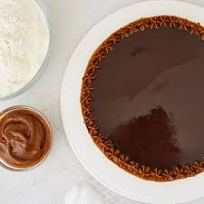

Nuestras especialidades
Rogel

Actualmente este postre lo conocemos como el merengue italiano, las 8 capas marcan el límite mínimo y el dulce de leche cobra mayor importancia al ser la clave de esta torta.
Tiramisu

El tiramisú es un delicioso postre italiano que le gusta a casi todo el mundo con su fantástica combinación de crema de mascarpone, café y cacao.
Havanette
La tarta o torta Havanette es uno de los postres preferidos en Argentina. Se trata de una masa crocante rellena de dulce de leche y de un rico baño de chocolate, una combinación infalible.